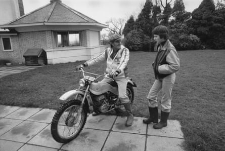
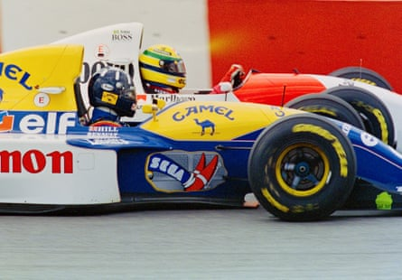
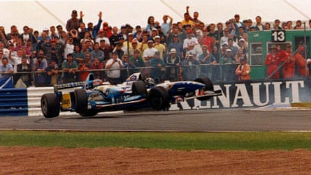
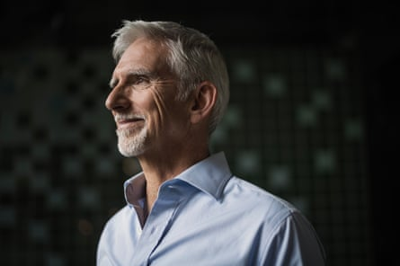
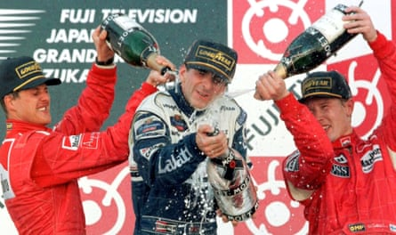

“I t was awful and to this day I feel the tension that I experienced,” Damon Hill says of the moment he heard on television in November 1975 that his father, Graham, the two-time Formula One world champion, had died in a plane accident . Hill had to leave the living room to find his mother and tell her what had happened.
“It was like having a nuclear bomb and I dropped it on my mum. Of course it was accentuated by the fact I was 15, which is when you haven’t got the defences to deal with it.”
The extent of Hill’s devastation is captured in a moving new Sky documentary which tracks his decision to follow his father into motor racing and eventually match him by winning the F1 championship in 1996. Early on in the film his wife, Georgie, remembers how he seemed to be one of the saddest people she had ever met.
“I was angry at the world,” Hill tells me. “I was furious. I’d had a belly-full of growing up as the son of a famous racing driver and people being interested in me because of that. I just wanted a normal life where people didn’t give a damn about that and I could establish who and what I was. Georgie was unimpressed by whoever my dad might have been, and by the racing world, so she was an oasis.”
Six months after they started seeing each other Georgie suddenly realised why he seemed so bereft. They drove past the graveyard where Hill’s father was buried and, finally, the dam broke.
“I remember it like yesterday,” Hill says. “I thought we were going on a trip down memory lane and I’d show her where I used to live. It hit me completely unexpectedly. Until then I had moments where I wept about my dad but they were rare. But there’s something about crying which soothes and having a good old sob is a good thing.”
In the film he speaks of his fleeting desire to have been on the plane with his father. Death, at 15, seemed easier than life. “I felt that immediately after the accident,” Hill says. “I was very upset and I wanted to be with my dad. If that meant being on the plane that would have been fine. I spent a lot of time next to my dad, in the co-pilot’s seat, and I loved being with him because he was a fascinating guy.”
Damon Hill with his father, Graham, in the garden of their Hertfordshire home, eight months before Hill Sr’s fatal plane crash.Photograph: Hulton Archive/Getty Images
Did Hill have counselling? “The closest we got to that was a day or two after he died. My school chaplain arrived at our house and wanted to console me in some way. I was really touched but there was no grief counselling in those days. People hadn’t even heard of it.”
As a kid Hill had never wanted to be a racing driver as he was smitten with motorbikes. But in his mid‑20s he resolved to follow his father into F1. “It came from a fairly juvenile sense of loss and attempting to recover something of the past. We had lost a life, and our world, and I wanted to try and recapture that in some way.”
He told Georgie that, one day, he would become world champion. Hill laughs. “I was always saying daft things like that. But I am determined and you need lots of determination to get up that ladder in F1.”
Hill was 30 when his F1 career began in 1991 as a test driver for Williams. His big break came two years later when he was promoted to race for the team alongside the newly signed Alain Prost, then a triple world champion, who replaced Nigel Mansell. There is an astonishing, if quaintly amusing, scene in the documentary where Hill films Georgie as she reads the contract as it spools out of their old fax machine. He keeps the video rolling even though he can barely believe that Frank Williams had stipulated that Hill should pay for his own flights and accommodation.

Damon Hill with Georgie at Brands Hatch in November 1984.Photograph: Geoffrey White/Daily Mail/Shutterstock
Hill smiles and says: “Back then we thought faxes were space age technology.” But he adds insight into the machinations of F1. “Frank was particularly clever and I’d said to him, because I wasn’t terribly impressed by how much he was going to pay me: ‘What about the travel?’ He said: ‘We’ll pay for it.’ I said: ‘What about Georgie?’ And he said: ‘OK. We’ll fix that.’ Now I’ve got to pay for my own travel! So you realise very quickly in Formula One you’ve got to pay attention to the detail.”
I tell Hill how interviewing Williams turned out to be one of my tougher gigs. He grins sympathetically. “I could never have a conversation with Frank. People used to say they’d spoken to Frank and it was all lovely and I’d go: ‘Honestly?’ I couldn’t get two words out of him and it would dry up and he’d stare at his tea. I’d say: ‘Do you want me to go now?’”
Hill showed incredible resolve, and great skill, to become world champion for Williams. But, near the end of that 1996 season, Williams coolly announced that Hill would be replaced the following year by Heinz‑Harald Frentzen. The team were about to begin a partnership with BMW and employing a German driver made business sense. Hill was axed but he clinched the championship anyway and left Williams as the team’s second most successful driver, with 21 race victories, behind Mansell.
Damon Hill racing alongside Ayrton Senna at Interlagos during his debut Formula One season in 1993.Photograph: Pascal Rondeau/Getty Images
“You can’t condemn people for having to do that when they’ve got a massive company to run,” Hill says. “I think he did feel something – not remorse, but he was uncomfortable having done that to me. Latterly, he said something like: ‘We should have kept you on.’ It was a little late, but nevertheless appreciated. He said some nice things about me after I’d gone. He called me a tough bastard, which is a compliment from Frank.”
The documentary offers fascinating insights into Michael Schumacher and Ayrton Senna . Archive footage shows how Schumacher was irked by Hill’s challenge . There is a scene where, after Hill won a race, Schumacher slaps his rival’s cap. It is meant to look playful but it’s a petty gesture tinged with frustration and anger.
“He was embarrassed and didn’t know how to respond to someone who had beaten him,” Hill says of Schumacher. “It was an awkward moment. I tried to have conversations with him and it wasn’t possible. Our values were different.
“I was nowhere near as good as him, and I’m never going to pretend that I was. But having him as a foil brought out the most I could get out of myself, and I know what it’s like to get driven absolutely to the maximum. Sometimes I was a match for him but, aged 36, it was hard. He was 26 and I was fighting the clock.”
Damon Hill and Michael Schumacher have a coming together at Silverstone in 1995. Schumacher branded his Championship rival ‘stupid’ after their crash, which handed the British Grand Prix to the German’s Benetton teammate Johnny Herbert.Photograph: Neville Marriner/ANL/Shutterstock
Georgie reveals how Senna, who had switched to Williams to drive alongside Hill, spoke especially kindly to her just before he died at Imola in 1994. He told her not to worry about Damon and reassured her that he would do well with Williams.
“We had the loss of [the Austrian driver] Roland Ratzenberger the day before. Everyone was conscious of that awful presence and I think he wanted to reassure Georgie about me and the team. It’s very poignant.”
Hill was a pallbearer at Senna’s funeral and the memory still moves him today. “Oh my God,” he says, “ambassadors and presidents had come from all over South America, all over the world, to this state funeral. This was not a racing driver. This was someone who was the best thing about Brazil. At a time when they needed a hero, he was their leading light. He represented hope for Brazil and still does that today.”
Does any driver today carry anything like the hinterland of Senna and other F1 greats? “It’s too early to say. They’re still very young, in their 20s, but I think back to when you had James Hunt and Niki Lauda, Prost and Senna. They seemed different men. But that’s maybe because I’m getting older and policemen are getting younger.”
Is Max Verstappen approaching the heights of Senna and Schumacher? “Yes, he’s in that mould. Max is disciplined and honed, trained to fight. But the whole point of the sport is to be up against a foe or nemesis who defines you. I don’t think F1 has the same gravitas as the era we’re talking about. From their perspective this is serious combat – but I don’t know if anybody’s matched up to Max’s seriousness yet. Until they do, he hasn’t got the foil. In the past you had to be a tough old boot to take on Alan Jones, Lauda and Hunt when he was on fire. They were brutally serious.
“Max and [43-year-old] Fernando Alonso are the same. Max always gives it 100%. Same with Fernando, who is cunning and clever. I wouldn’t want to play cards with him.”
Damon Hill today. He says of winning the world title at 36: ‘I’m proud of myself for having achieved it. I paid my dues.’Photograph: Sarah Lee/The Guardian
Which of the younger drivers have impressed him? “Oscar Piastri is interesting. He has a calmness and confidence in himself that’s not overstated. Charles Leclerc is super-talented, super-quick but he’s maybe too comfortable in the Ferrari. Carlos Sainz Jr [who lost his seat at Ferrari to Lewis Hamilton] has got that mettle which makes him fight in whatever position you put him in.”
And Lando Norris, who is locked in battle for the championship with Piastri, his team-mate, and Verstappen? “Lando is very talented,” Hill says. “He’s gifted and smart, but I don’t sense he’s concerned enough that he might lose it. I would be worried he’s going to come off second-best to Oscar. I don’t know if he realises the consequences. You just can’t be beaten. ”
In his quest to heal himself, and match his father, Hill would not be beaten in 1996. He recalls how, before a crucial race at Suzuka in Japan, he said a few words of prayer to Senna. “An extraordinary thing happened,” Hill says as he remembers driving magisterially, like he had never driven before, as if he had found a mysterious way to channel the brilliance of Senna.
“I have no real explanation for what happened other than we are constrained by our conscious brain to be cautious and our limbic system is much more capable than we ever give it credit for.
Damon Hill (centre) is doused in champagne by Michael Schumacher (left) and Mika Häkkinen after winning the Japan Grand Prix at Suzuka to clinch the 1996 world drivers’ championshipPhotograph: Susumu Takahashi/Reuters
“If we can just get ourselves out of the way, we can do extraordinary things, and making that little prayer freed me up. I couldn’t find any other way of going quicker. I was going to get beaten by Michael. I wouldn’t say it was an out-of-body experience because I was there in the car, but my hands and my feet were just completely free. It was like someone had suddenly taken off the handbrake.”
Hill became world champion, at the age of 36, and he says: “I’m proud of myself for having achieved it, and it’s a great accolade to get to the top of any sport. I’m constantly reminded of the respect that accords but I paid my dues. I put myself through a lot to get there.”
HILL will air on Sky and streaming service NOW from Wednesday 2 July .